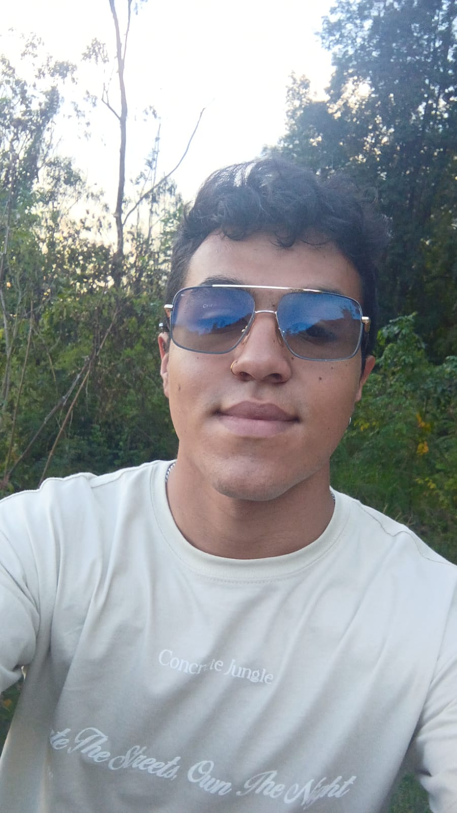

Welcome to my portfolio
Sebastian Zarate Pinilla
Desarrollador de Software Junior

Bienvenido a mi portafolio. Aquí podrás conocer mi experiencia, los proyectos en los que he
trabajado y las habilidades
que he desarrollado como programador. Me apasiona crear soluciones tecnológicas, aprender
constantemente y mejorar mis
conocimientos en distintas herramientas y lenguajes. En este espacio encontrarás algunos de mis
proyectos y parte de mi
crecimiento en el desarrollo de software. Gracias por visitar mi portafolio.